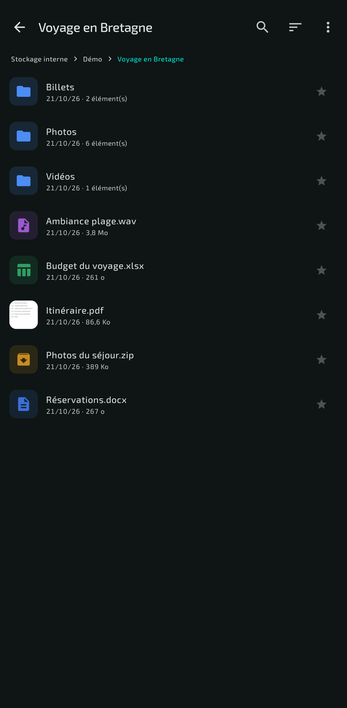
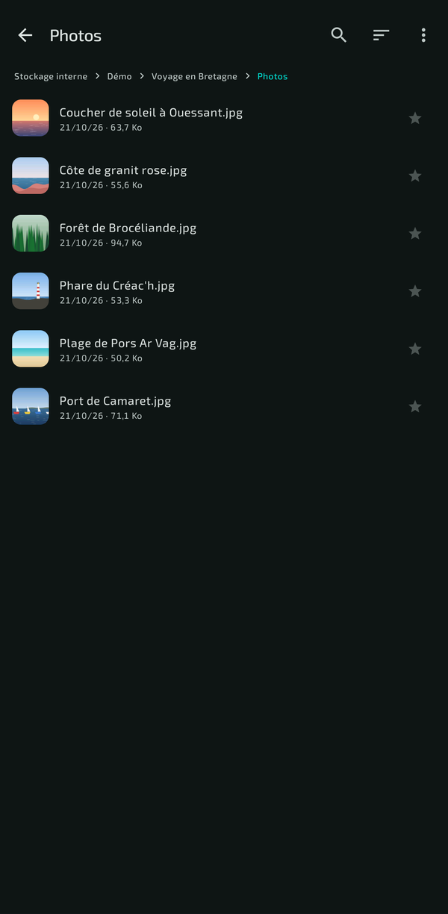
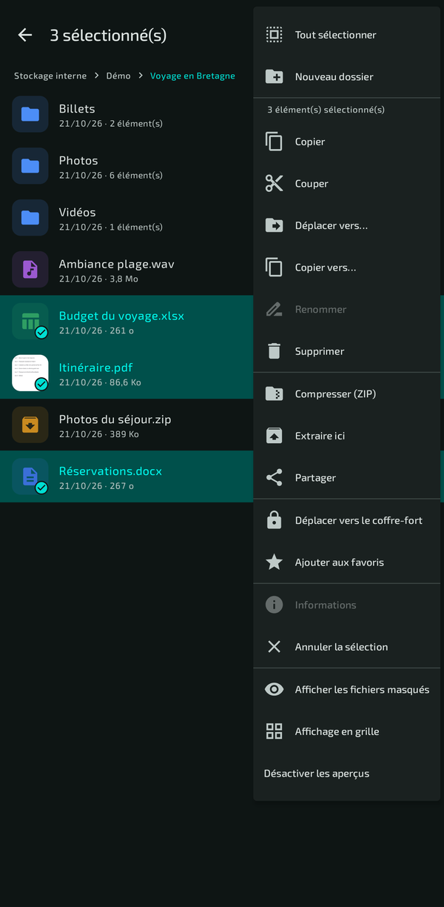
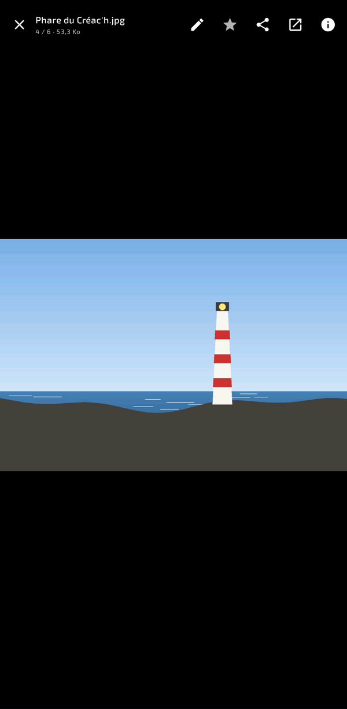
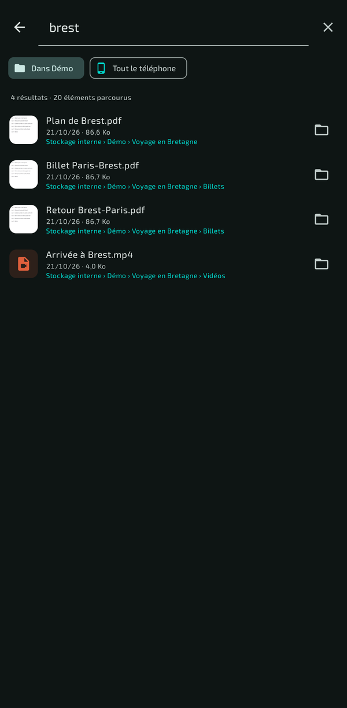
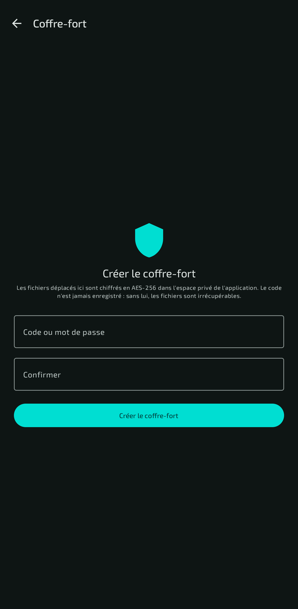
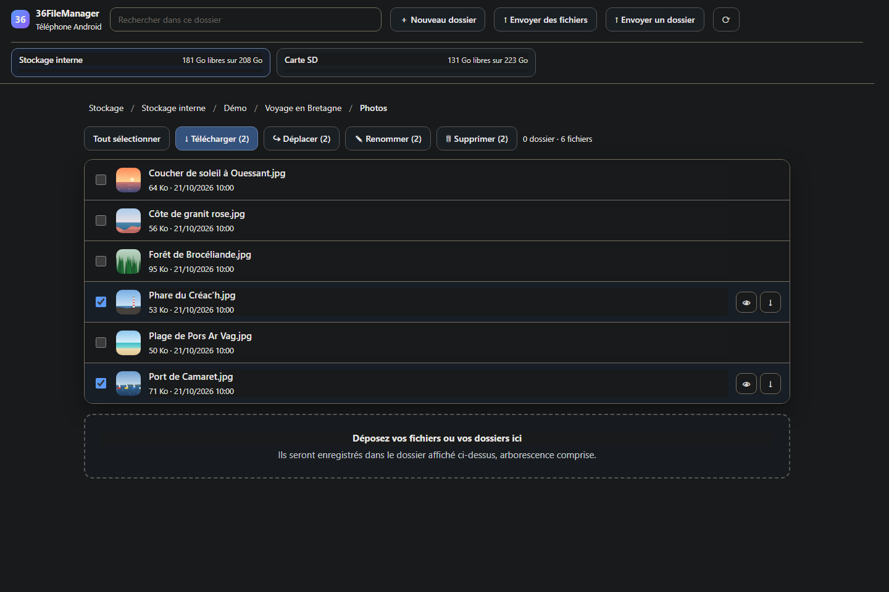
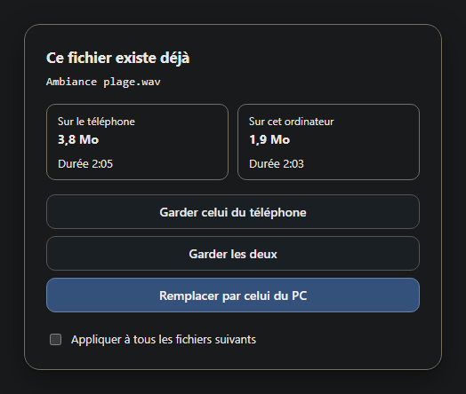
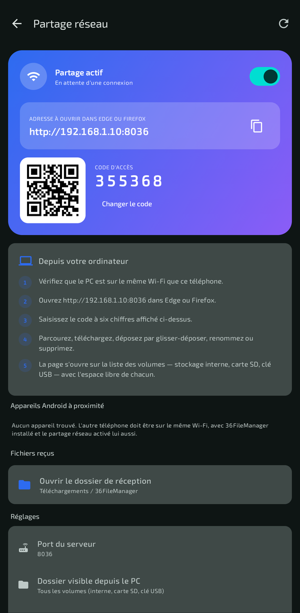

Tous vos stockages, un seul explorateur
Stockage interne, carte SD, clé USB-C : tout est détecté, même ce qu'Android n'annonce pas toujours. Et chaque opération fonctionne sur les fichiers comme sur les dossiers entiers.
- Copier, couper, déplacer, renommer, supprimer — sur un élément ou une sélection, avec « Tout sélectionner »
- Compresser en ZIP, extraire — protégé contre les archives piégées qui rempliraient le stockage
- Rien ne s'écrase par accident —
photo.jpgdevientphoto (1).jpg - Catégories transversales — Images, Vidéos, Musique, Documents, où qu'ils soient, et Téléchargements à portée de main
- Favoris, tri, fichiers cachés — de vrais raccourcis, triés par nom, taille ou date

Des aperçus pour les images, vidéos, PDF et pochettes

Toutes les actions dans le menu « ⋮ »

Tout s'ouvre, sans chercher la bonne application
Touchez un fichier : 36FileManager sait quoi en faire.
- Visionneuse à balayage — images et PDF en plein écran, d'un balayage au fichier suivant, zoom au pincement
- Retouche — un bouton envoie la photo dans les outils de votre téléphone
- Fichiers d'installation — un
.apkmontre son icône, son nom et sa version, et propose « Mettre à jour » s'il est déjà installé - Texte et archives — journaux, JSON ou sous-titres lisibles même quand aucune application ne les ouvre ; ZIP extrait en un toucher
- Vidéo et musique — confiées en un appui à VLC ou à votre lecteur préféré

Retrouvez n'importe quel fichier
La loupe de l'accueil cherche sur tout le téléphone ; dans un dossier, un bandeau propose de chercher aussi dans tous ses sous-dossiers.
- Accents et majuscules ignorés — « ete » trouve « Été 2025 »
- Les mots dans n'importe quel ordre — « facture 2025 » trouve « 2025_Facture_EDF.pdf »
- L'emplacement de chaque résultat — et un appui pour ouvrir le dossier, fichier déjà sélectionné
- Les plus proches d'abord — les résultats s'affichent au fil de la recherche
- Retour aux résultats — ouvrir un résultat ne fait pas perdre la liste

Un coffre-fort réellement chiffré
Déplacez-y n'importe quelle sélection : les fichiers sont chiffrés, pas simplement cachés, et ne se rouvrent qu'avec votre code ou votre empreinte.
- AES-256 — clé de données scellée par une clé dérivée de votre code (PBKDF2, 120 000 itérations)
- Contenu authentifié — un fichier altéré est détecté à la restauration, au lieu de ressortir corrompu
- Empreinte digitale — en option, adossée au Keystore matériel du téléphone
- Le code n'est jamais enregistré — sans lui, personne ne lit le coffre, pas même l'application
À savoir : le coffre vit dans l'espace privé de l'application. Désinstaller 36FileManager le détruit : restaurez son contenu avant.
Votre téléphone, dans le navigateur du PC
Un interrupteur, et le téléphone devient une page web. Tapez l'adresse affichée dans Edge ou Firefox — ou scannez le QR code —, saisissez le code à six chiffres : vous parcourez le téléphone depuis le PC, sans câble et sans rien installer.

Dans les deux sens
Téléchargez un fichier ou un dossier entier, compressé à la volée ; déposez des fichiers et des dossiers complets par glisser-déposer.
Comme un explorateur
Recherche, renommage, déplacement et suppression depuis le PC, avec l'espace libre de chaque volume toujours affiché.
Des envois qui tiennent
File d'attente, bouton « Relancer » sur les échecs, et des transferts stables même écran éteint.
Les doublons, réglés avant l'envoi
Un fichier déjà présent à l'identique n'est pas renvoyé. S'il diffère, vous choisissez : garder celui du téléphone, garder les deux, ou remplacer — avec la taille et, pour la musique et la vidéo, la durée de chaque version.

Entre deux téléphones, aussi
Les appareils équipés de 36FileManager se découvrent sur le Wi-Fi. Choisissez le destinataire et les fichiers ; lui voit une demande détaillée, et rien n'est écrit sur son téléphone avant qu'il accepte.

Les partages de la maison, et le cloud
Lecteurs Windows, NAS, Linux
L'adresse IP de la machine, puis l'identifiant et le mot de passe : 36FileManager liste tous ses dossiers partagés, comme l'Explorateur Windows. Les mots de passe enregistrés sont chiffrés.
Google Drive, OneDrive, Dropbox…
Par le système de documents d'Android : aucun compte développeur, aucune clé d'API, aucun mot de passe qui transite par l'application.
Partage classique
Vers WhatsApp, Gmail, Bluetooth… par le sélecteur habituel ; un dossier est compressé en ZIP avant l'envoi.
Ce qui protège le partage réseau
Ouvrir le téléphone sur le réseau, même à la maison, demande des précautions. Voici les huit barrières, dans l'ordre où une requête les rencontre.
À savoir
Entièrement réalisé avec Claude
36FileManager a été conçu, écrit et testé de bout en bout avec Claude, l'intelligence artificielle d'Anthropic : le code, les tests, les captures de cette page et cette page elle-même.
En français uniquement
L'application, ses menus, ses messages et sa documentation n'existent qu'en français. Aucune autre langue n'est proposée.
Ce qu'Android réserve
Depuis Android 11, les dossiers Android/data et les données des autres applications sont fermés à toutes les applications, celle-ci comprise.
Sur un réseau de confiance
Le partage web circule en clair sur le réseau local : utilisez-le chez vous, et coupez-le quand vous avez fini — le bouton est dans la notification.
Installer 36FileManager
- Téléchargez l'APK depuis la dernière version publiée.
- Ouvrez-le sur votre téléphone ; Android demande d'autoriser l'installation depuis cette source.
- Au premier lancement, accordez « Accès à tous les fichiers » : c'est ce qui permet de parcourir et de modifier le stockage.
- Pour mettre à jour, installez la nouvelle version par-dessus : favoris, réglages et coffre-fort sont conservés.
| Android | 8.0 ou plus récent |
|---|---|
| Compte | Aucun |
| Internet | Aucun serveur de l'application ; le partage avec le PC reste sur votre Wi-Fi, les lecteurs réseau sont ceux que vous indiquez |
| Langue | Français uniquement |
| Réalisation | Entièrement avec Claude (IA d'Anthropic) |
| Technologies | Kotlin, Jetpack Compose, Material 3 |
| Certificat de signature (SHA-256) | ec15f53fdc8cb032dff9cb1c1d72e58b26bdc953b101a3116659f00d87345813 |
| Code source | https://github.com/36txXnxTrGXgSH/36FileManager |